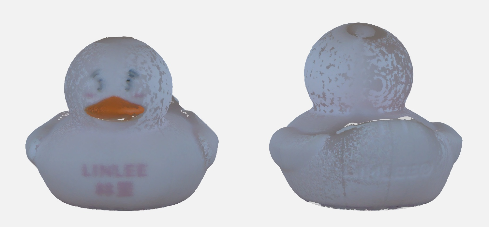
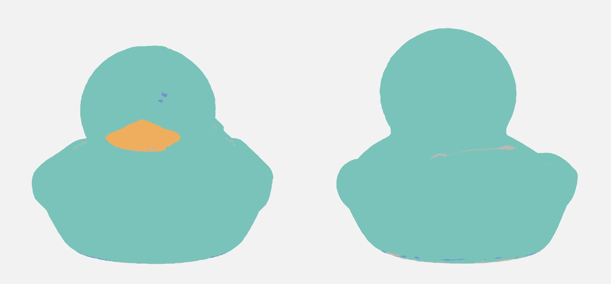
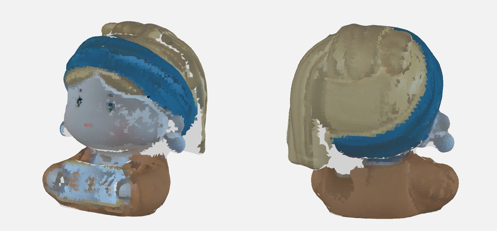
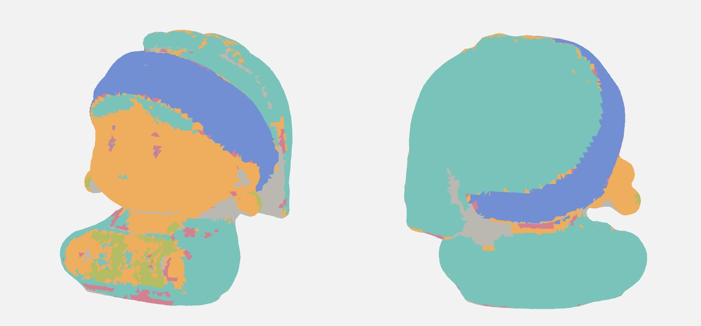
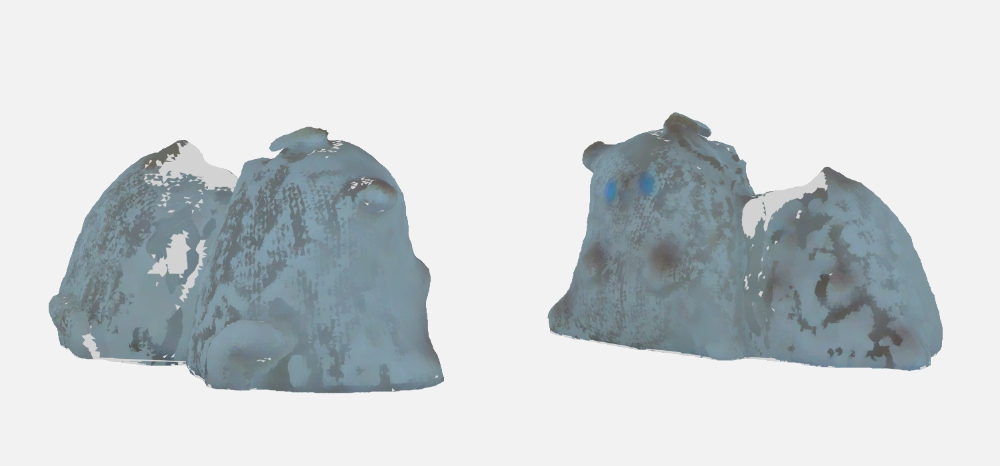
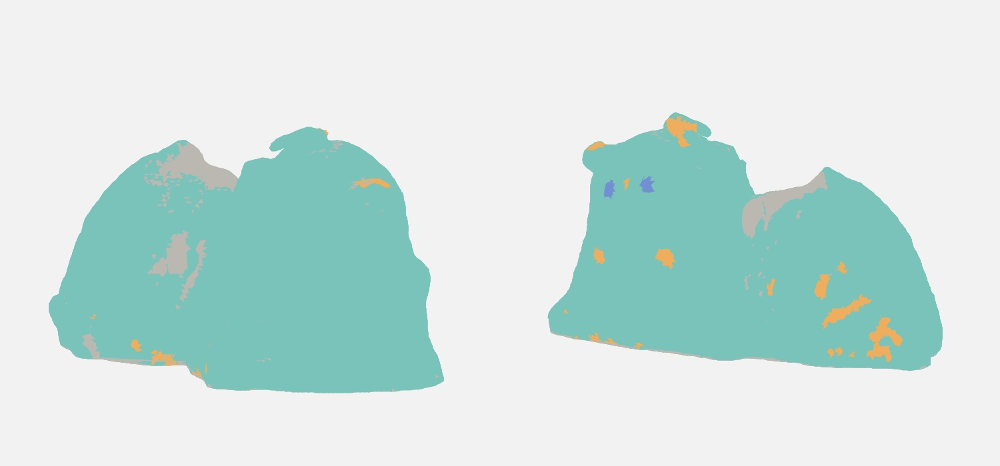
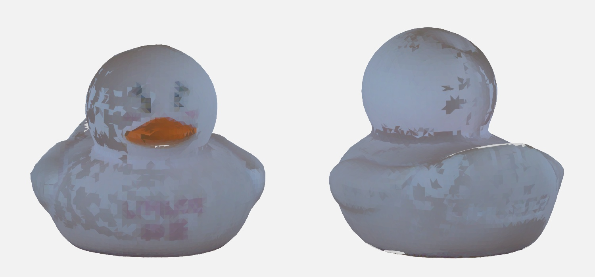
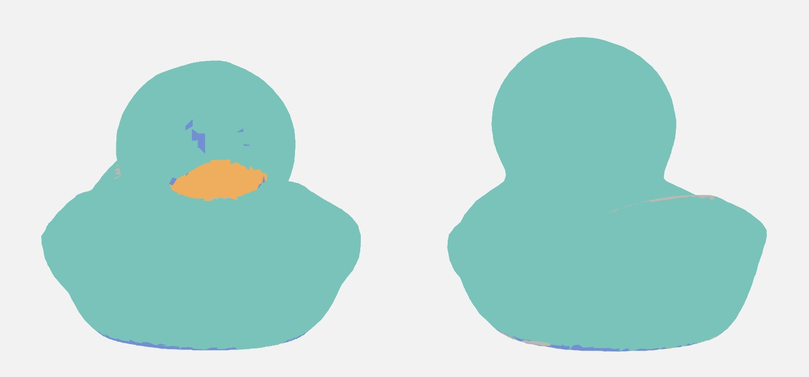

← 陈列柜用实测颜色划分上色区域
每件网格只读取其对应扫描的点云；沿用已有毫米坐标变换，没有再次配准。每个三角面中心取附近实测 RGB 的中位数，距离上限 0.9 mm，至少 3 点；补洞点和 RGB 饱和点不作为颜色证据。
RGB 转 Lab，亮度差权重 0.55；颜色聚类后合并相近色与同色相的明暗变化，再沿表面邻接清理低对比碎块。小而高对比的深色细节单独保护。相同色区可以跨越不同身体部位。
这是颜色分组，不是五官语义识别。阴影、原始颜色错位和低分辨率会影响边界；深色组也可能包含阴影。未知区不被假称为实测颜色。可在展品页面用画笔修正，或切回原有手动分区。
小鸭 3 个颜色组 + 未知区
扫描：fpga-full-20261003-005504 · 原始点数 597,326 · 有近邻实测颜色的表面积 83.6%（不是分割准确率）

原始 RGB 局部中位数映射 · 正反面，灰色为没有可靠颜色的表面
分区示意色 · 同色代表同一上色组，不是实物颜色| 色区（示意色） | 三角面 | 面积 mm² | 实测 RGB 中位数 |
|---|
| 浅色色区 1 | 53,622 | 6533.9 | [130.0, 135.5, 152.0] |
| 橙棕色区 2 | 2,098 | 165.1 | [130.0, 85.5, 58.5] |
| 深色细节 3 | 539 | 41.9 | [95.5, 89.0, 101.5] |
| 颜色未知 | 3,741 | 包括平面封底、缺少近邻颜色的推断表面 |
完整参数与来源校验报告 ↗ · 进入展品上色 ↗
娃娃 5 个颜色组 + 未知区
扫描：scan3d-pc-20261010-032157-5c3bcd · 原始点数 2,907,199 · 有近邻实测颜色的表面积 83.0%（不是分割准确率）

原始 RGB 局部中位数映射 · 正反面，灰色为没有可靠颜色的表面
分区示意色 · 同色代表同一上色组，不是实物颜色| 色区（示意色） | 三角面 | 面积 mm² | 实测 RGB 中位数 |
|---|
| 黄褐色区 1 | 12,120 | 4625.4 | [128.5, 111.5, 89.0] |
| 浅色色区 2 | 5,846 | 2261.2 | [123.5, 128.5, 136.5] |
| 深蓝色区 3 | 4,543 | 1738.2 | [35.0, 84.0, 117.5] |
| 深色细节 4 | 699 | 214.6 | [94.0, 79.5, 72.0] |
| 蓝色色区 5 | 538 | 202.6 | [140.0, 171.0, 197.0] |
| 颜色未知 | 2,424 | 包括平面封底、缺少近邻颜色的推断表面 |
完整参数与来源校验报告 ↗ · 进入展品上色 ↗
小猫 3 个颜色组 + 未知区
扫描：scan3d-20260427-214255-3f97df · 原始点数 63,286 · 有近邻实测颜色的表面积 74.1%（不是分割准确率）

原始 RGB 局部中位数映射 · 正反面，灰色为没有可靠颜色的表面
分区示意色 · 同色代表同一上色组，不是实物颜色| 色区（示意色） | 三角面 | 面积 mm² | 实测 RGB 中位数 |
|---|
| 浅色色区 1 | 47,011 | 2028.3 | [119.0, 137.0, 145.0] |
| 深色细节 2 | 1,435 | 60.2 | [93.0, 96.0, 96.0] |
| 蓝色色区 3 | 81 | 3.5 | [71.0, 124.5, 156.0] |
| 颜色未知 | 2,353 | 包括平面封底、缺少近邻颜色的推断表面 |
完整参数与来源校验报告 ↗ · 进入展品上色 ↗
Duck_last 3 个颜色组 + 未知区
扫描：scan3d-pc-20261010-163204-441887 · 原始点数 2,374,830 · 有近邻实测颜色的表面积 84.3%（不是分割准确率）

原始 RGB 局部中位数映射 · 正反面，灰色为没有可靠颜色的表面
分区示意色 · 同色代表同一上色组，不是实物颜色| 色区（示意色） | 三角面 | 面积 mm² | 实测 RGB 中位数 |
|---|
| 浅色色区 1 | 18,901 | 6445.2 | [125.0, 130.0, 144.0] |
| 橙棕色区 2 | 395 | 133.5 | [130.5, 82.0, 49.5] |
| 深色细节 3 | 461 | 82.4 | [89.5, 79.0, 86.5] |
| 颜色未知 | 681 | 包括平面封底、缺少近邻颜色的推断表面 |
完整参数与来源校验报告 ↗ · 进入展品上色 ↗